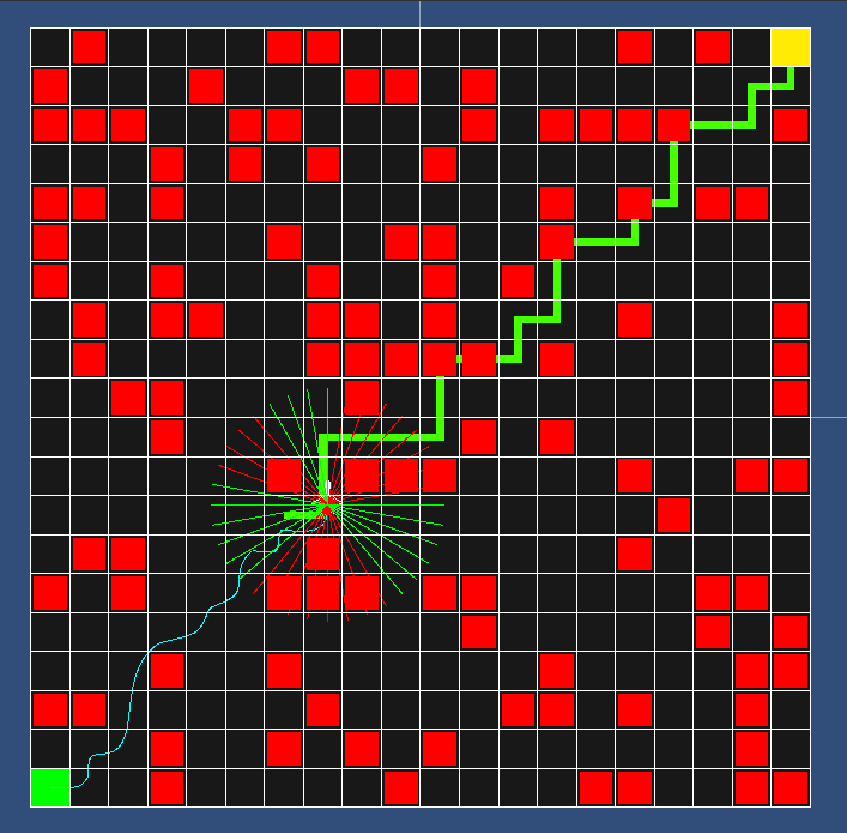

Pathfinding
A little unity gamelike pathfinding simulation implementation.
Designed to simulate how a drone would find it's way through a maze without knowing the map in advance.

Implementation
Based on a paper on drone navigation (here) reduced only to a 2D space, this implementation uses:

 For an easy explanation, having two conected segments ([P0,P1] and [P1,P2]), we start from one side on both of them (P0 and P1) and move along to the other end.
For each pair of two points we draw a line (the green line in the gif) and consider the middle point as part of the future curve, as you can see in the image on the right.
For an easy explanation, having two conected segments ([P0,P1] and [P1,P2]), we start from one side on both of them (P0 and P1) and move along to the other end.
For each pair of two points we draw a line (the green line in the gif) and consider the middle point as part of the future curve, as you can see in the image on the right.